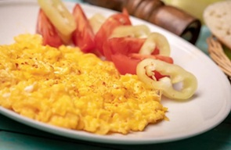

A tojásokat nem tányérba, hanem egy magasabb falú edénybe ütöm. A keveréshez nem villát veszek elő, hanem a botturmixot, és szép egyenletesre turmixolom a tojásokat. (Akinek gép gyorsaságú csuklója van, próbálkozhat kézi habverővel is, de nem lesz ugyanaz a végeredmény.) Amikor a keverék kissé kifehéredik, és habos lesz, akkor jó. Ezután a serpenyőben vaja olvasztok. Nagyon alacsony lángon hozzákeverem a tojásokat, és ugyanezen a takarék hőmérsékleten sütöm őket lágyra. Azonnal tálalom.
